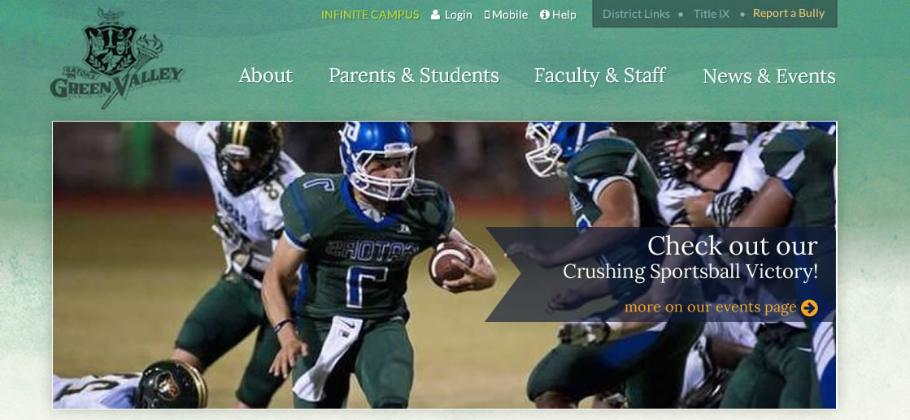
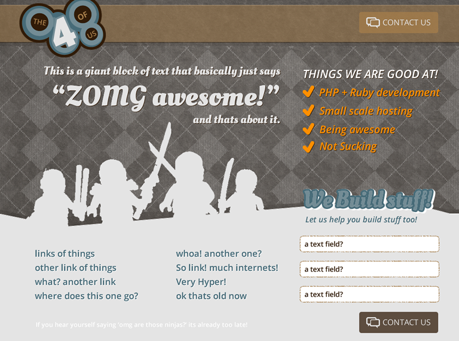

Green Valley High School
- Information architecture overhaul
- clean visual presentation
- responsive / mobile first approach
- Wordpress development
the 4 of us
- Quirky visual presentation
- responsive / mobile first design
- Static front-end
Yoga West
- Information architecture
- Calming / Focused visual presentation
- Wordpress theme development
Bistro Byrons
- Information architecture
- Rustic visual presentation
- Wordpress theme development